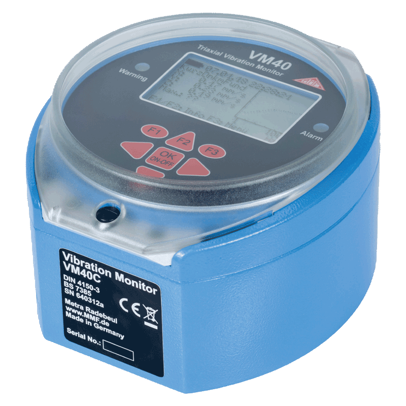
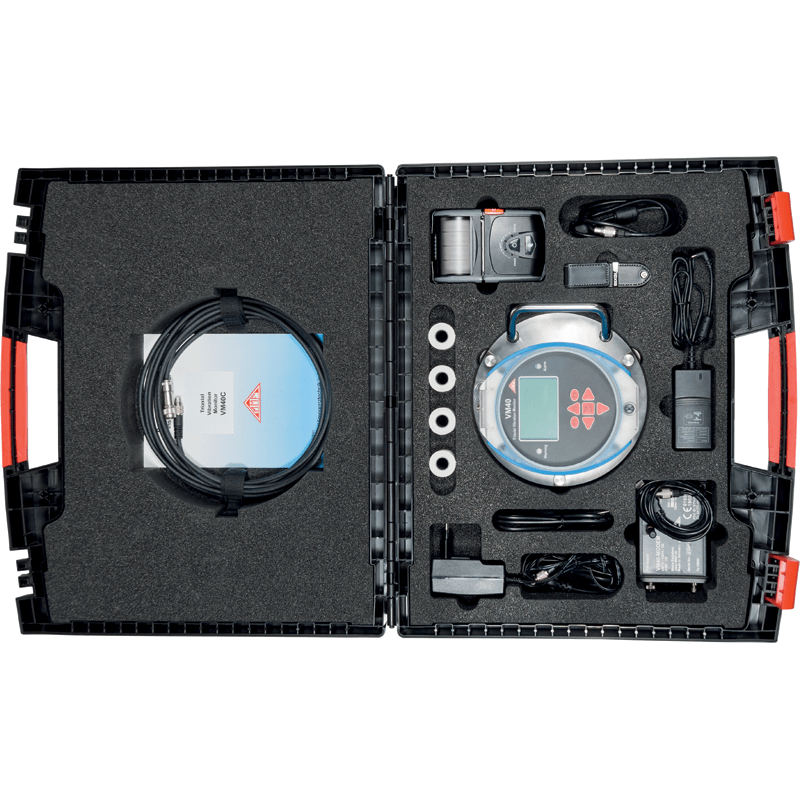
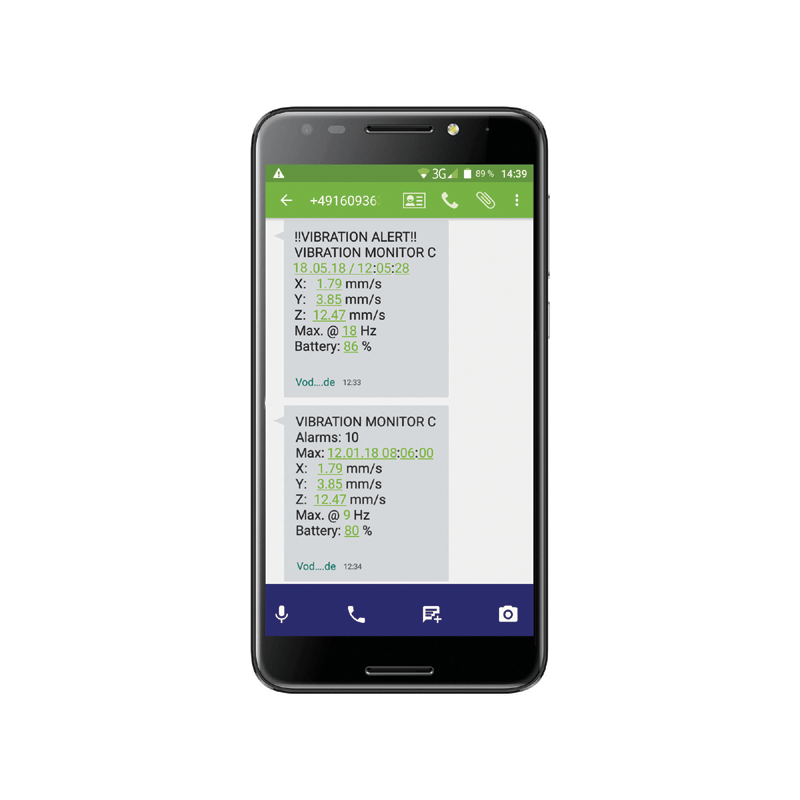
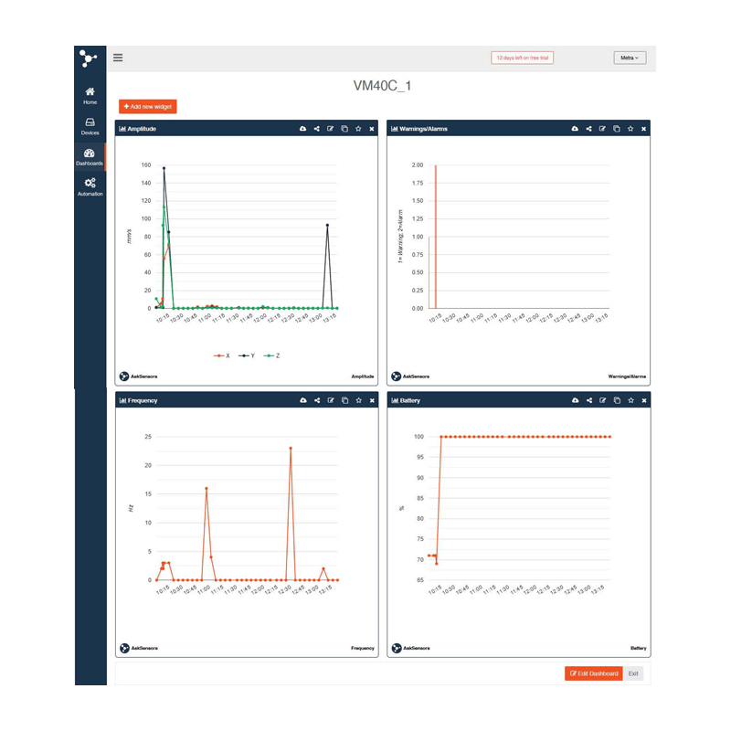
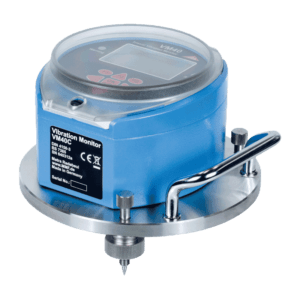
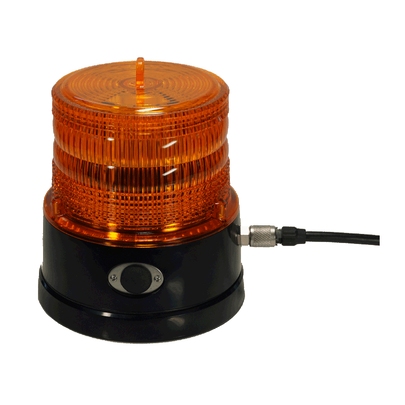
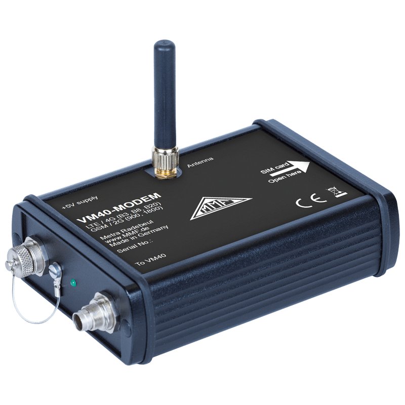
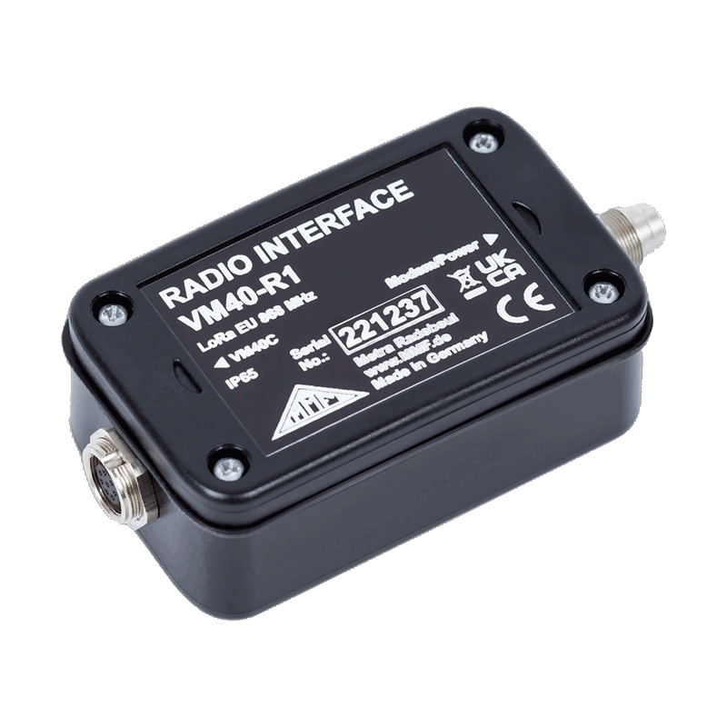
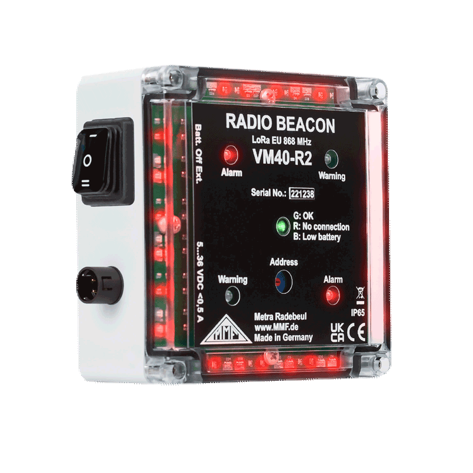
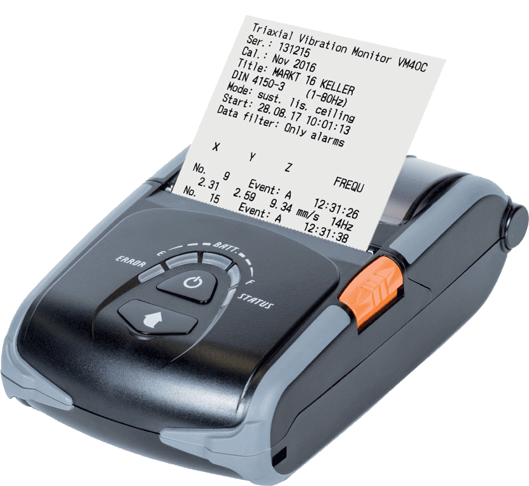

건물은 지진 외에도 건설 활동·산업 기계·도로 교통·철도 진동 등 다양한 요인으로 누적 피로에 노출됩니다. 씨앤디테크가 국제 표준 기반 건축물 진동 상시 모니터링과 독일 MMF사 진동 모니터링 시스템을 소개합니다.

건물 진동은 지진 이외에도 아래와 같은 요인에서 발생할 수 있습니다.
| 문제 인식 | 건물 거주자가 진동을 체감해 측정 업체가 구조적 무결성 위험을 평가 |
|---|---|
| 제어 모니터링 | 최대 허용 진동 값을 설정하고 해당 값을 지속적으로 측정 |
| 문서화 | 건물 설계의 반응 예측을 검증하기 위해 측정 수행 |
| 진단 | 보다 심층적인 조사 수준에서 측정, 완화 절차를 위한 정보 제공 |
진동 측정의 매개변수는 다음 네 가지입니다.
독일 DIN 4150-3과 같은 표준은 수많은 실제 측정 경험을 바탕으로 기준값(가이드 값)을 제공합니다. 이 기준값 이하의 진동 진폭에서는 손상이 발생할 가능성이 거의 없으며, 결과가 가이드 값보다 높으면 더 심층적인 분석을 수행해야 합니다.
| 구분 | 과도 진동 | 지속적인 진동 |
|---|---|---|
| 재료 피로 | 유발할 만큼 강하지 않음 | 재료 피로를 유발할 수 있음 |
| 공진 영향 | 증가하기엔 너무 짧고 드물게 발생 | 공진으로 진동 크기가 증가할 수 있음 |
건물 진동 규격으로는 DIN 4150-2, ISO 2631-1, ISO 4866, ISO-10137 등이 있으며, 대표적인 유럽 진동 표준은 다음과 같습니다.
| German DIN 4150-3 | Vibration in buildings — Part 3: Effects on structures (각국 파생 규격 다수) |
|---|---|
| British BS 7385 | Evaluation and measurement for vibration in buildings. Guide to damage levels from ground borne vibration |
| Swiss SN 640312a | Vibration immission in buildings |
| ISO 4866 | Mechanical vibration and shock — Vibration of fixed structures — Guidelines for measurement and evaluation |
| French Circulaire du 23/07/86 | 프랑스 건물 진동 관련 규정 |
건축물 진동 모니터링 전용 장비인 독일 MMF사의 VM40C를 소개합니다.



| 지원 표준 | BS 7385, Circulaire du 23/07/86, DIN 4150-3, SN 640312A |
|---|---|
| 측정 대상 | Peak of acceleration, Peak of velocity |
| 가속도 측정 범위 | 0.01 ~ 15 m/s² |
| 속도 측정 범위 | 0.1 ~ 2400 mm/s |
| 주파수 범위(-3dB) | 0.8~100Hz, 0.8~395Hz, 5~150Hz |
| 출력 | Relay, Serial |
| 전원 공급 | 5V(USB), 충전식 배터리 |
프린터·경광등을 옵션으로 제공해 손쉽게 진동 알람 및 데이터를 확인할 수 있습니다. 아래 액세서리 구성을 참고하세요.
VM40C는 설치 환경과 현장 요구 사항에 맞춰 아래 옵션 액세서리를 추가로 구성할 수 있습니다.






IoT 커넥션 지원으로 웹 상에서 상시 모니터링이 가능합니다. 현장에 설치된 시스템의 진동 데이터를 AskSensors·ThingSpeak 플랫폼을 통해 원격에서 실시간으로 확인할 수 있어, 관리자가 현장에 상주하지 않아도 이상 진동 발생 시 즉시 SMS 알람으로 파악할 수 있습니다.
관련 기술 자료 더 보기:
건축물(빌딩) 진동 모니터링 관련 질문
건물 용도, 인접 진동원(공사장·철도·도로 등), 적용 표준(DIN 4150-3 등)을 알려주시면 최적의 진동 모니터링 시스템 구성과 IoT 원격 감시 셋업을 안내해 드립니다.